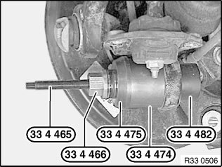
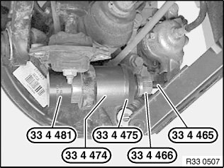

Ball Joint: Service and Repair
33 32 125 Replacing a ball joint in lower steering knuckle/wheel carrierSpecial tools required:
Note:
E90, E91 from 09/2008:
For driving dynamic reasons, both ball joints must be replaced on first replacement. After replacing the rubber mounts, mark wheel carriers with punch marks. If the punch marks are provided, the ball joints can be changed again individually.
Necessary preliminary tasks:
^ Remove coil spring at rear
^ If necessary, remove jointed rod of ride-height sensor from camber arm bracket
^ Remove rear shock absorber from rubber mount
^ Remove camber arm from wheel carrier
^ Remove trailing arm from wheel carrier

Pull out and remove ball joint with special tools 33 4 465, 33 4 466, 33 4 475, 33 4 474 and 33 4 482.

Installation:
Push in new ball joint until it stops using special tools 33 4 481, 33 4 474, 33 4 475, 33 4 466 and 33 4 465.
After installation:
^ Perform chassis alignment check